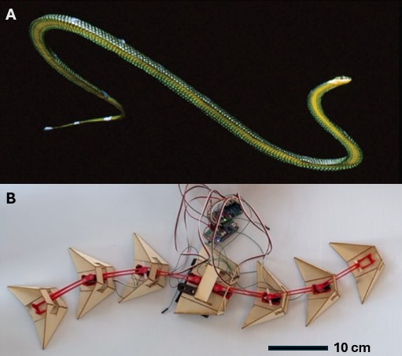
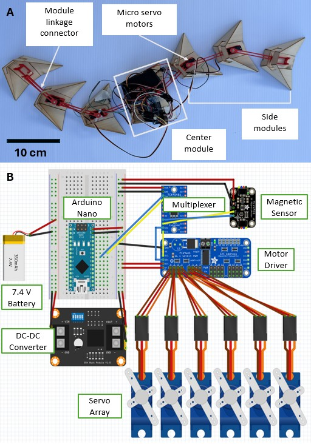
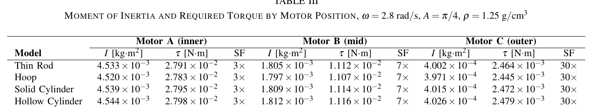
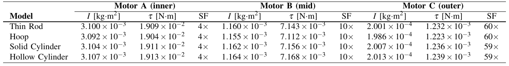
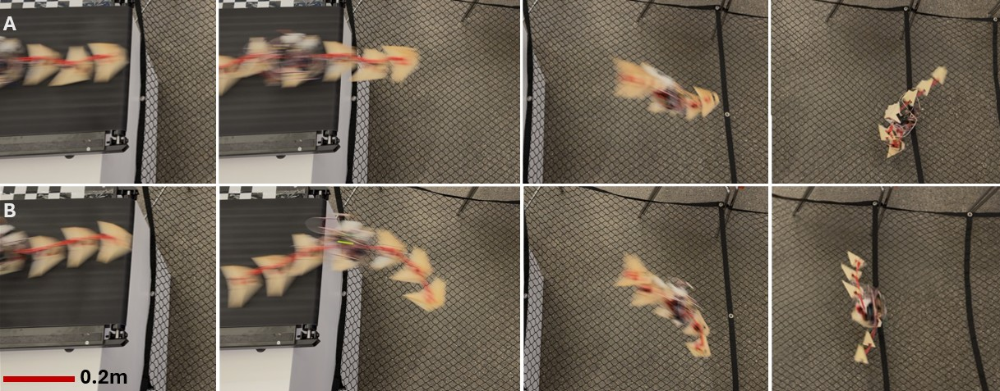
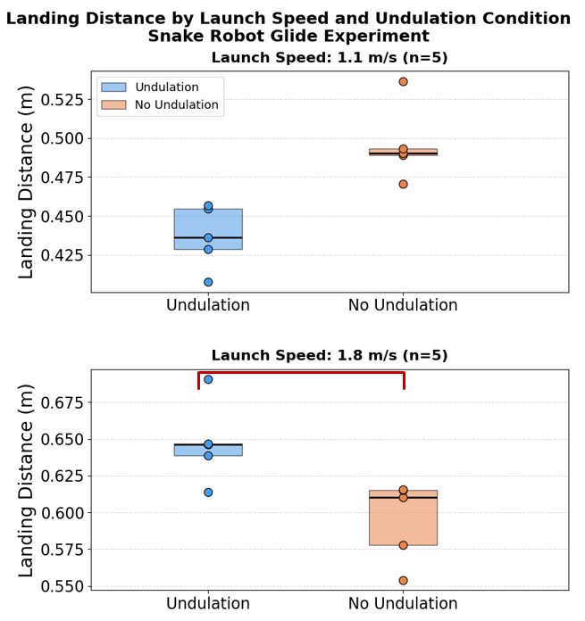
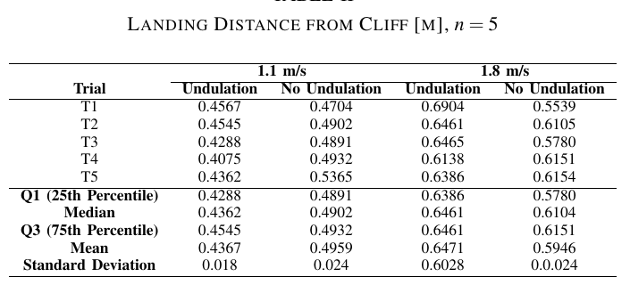

A modular, 7-segment gliding snake robot built to test whether aerial undulation increases glide distance. The motion of Chrysopelea paradisi, commonly known as the gliding snake, use mid-flight. A five-person team project; I led the motor torque analysis that sized and selected the actuators, and worked on experimental testing and statistical analysis of the results.
The gliding snake Chrysopelea paradisi actively undulates its body while airborne to maintain stability, but whether that undulation actually increases how far it glides had never been tested in a controlled experiment. As a five-person team in a bio-inspired design course, we set out to build a physical robot that could isolate and test that one variable. This experiemnt compared horizontal glide distance with and without undulation under identical launch conditions.

My responsibility was the motor torque analysis that determined which actuators the robot could safely use. This work fed directly into the electrical team's motor selection and the final mechanical design of the side modules. I also contributed to the experimental testing of the physical robot and the statistical analysis used to evaluate whether undulation meaningfully changed glide distance.

The core calculation: each module i follows a sinusoidal joint trajectory, and the peak angular acceleration sets the worst-case torque demand at each joint.
Undulation kinematics
Required joint torque
Parallel-axis theorem
Motor safety factor
A = π/4 rad (max amplitude), ω = 2.8 rad/s. Four Icm models were compared — thin rod, hoop, solid cylinder, hollow cylinder — to bound the estimate. SFj ≥ 1 means the motor operates safely; the innermost joint (highest inertia) was the limiting case.


Informed directly by my torque analysis, switching the side-module material from PLA to balsa wood improved the innermost motor's safety factor. The safety facor was improved from 3× to 4×, giving the team a lighter, safer final design. On the physical robot, undulation did not improve glide distance at the lower launch speed of 1.1 m/s (p = 0.998), but at 1.8 m/s it increased mean glide distance by 8.7%, from 0.595 ± 0.024 m to 0.647 ± 0.028 m (p = 0.010) — a statistically significant result showing that undulation's benefit depends on reaching a sufficient launch velocity.


